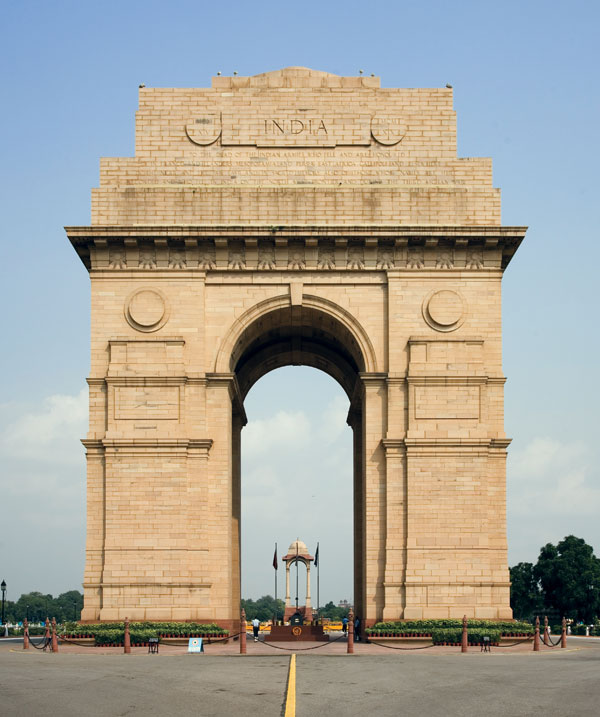

Delhi is one of the four largest cities of India. Other such cities are Mumbai, Kolkata and Chennai. In at least one case, Delhi is at the top of the other three cities. It is in the case of the number of auto-vehicles. The number of vehicles running in Delhi is more than the number of other three major cities which all put together. Delhi is the capital of India. It has been the capital of India for centuries, except for a short period of time here and there. This was because before partition, it was located in the heart of the country. However, its importance has not been reduced after independence. Delhi is sometimes called the city of kings. In the past it has been the capital of various dynasties, many monuments and places are worth seeing in it.
